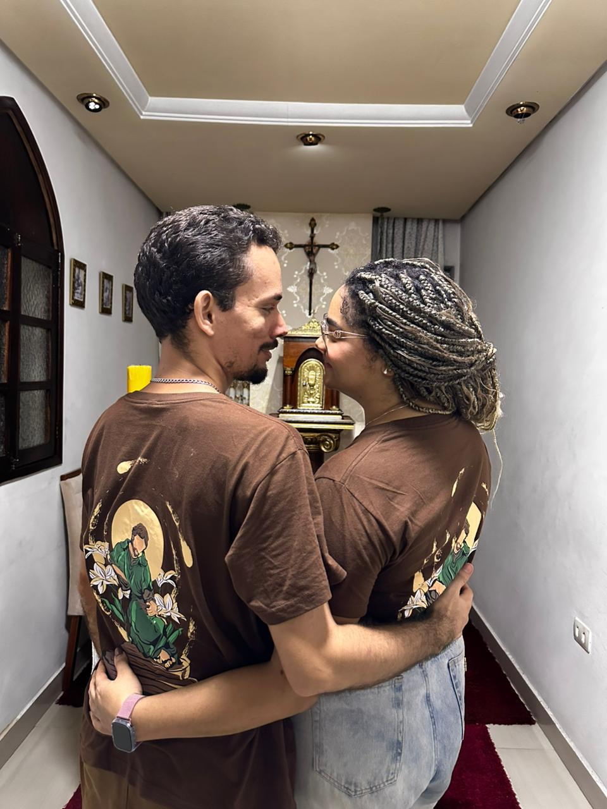
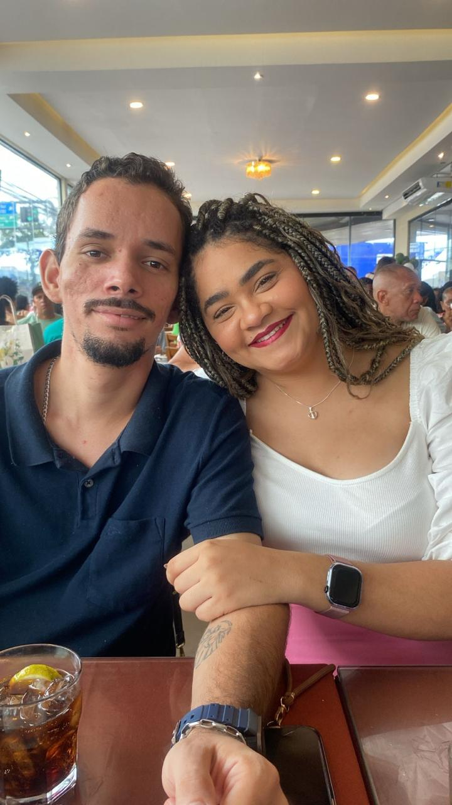
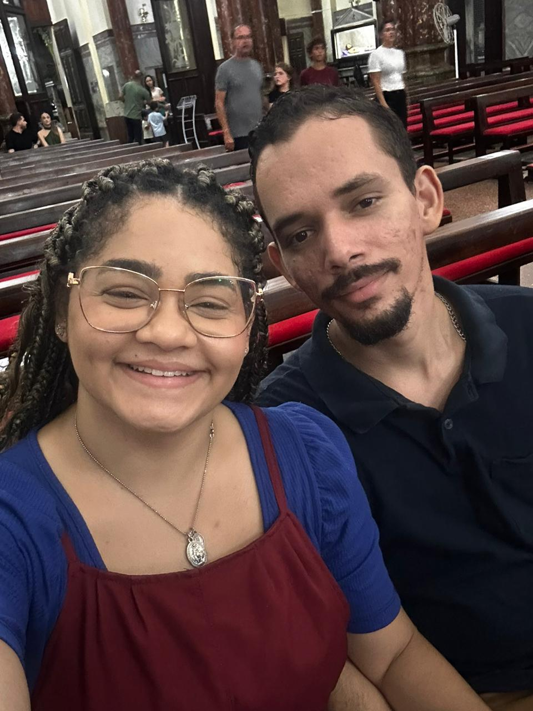
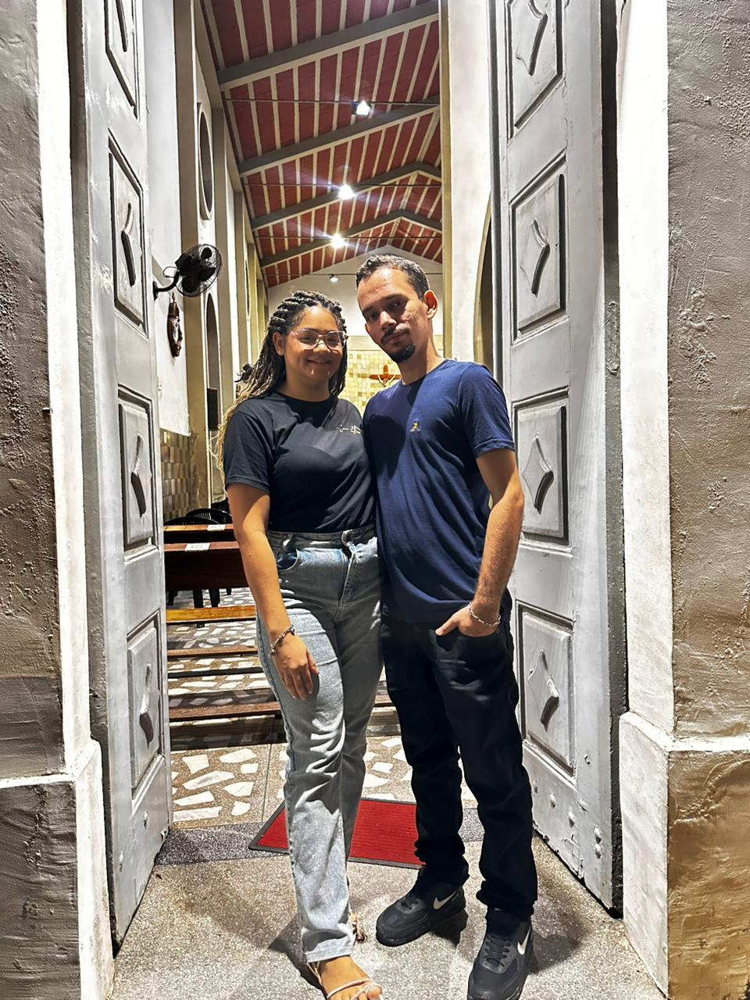

12 de Julho de 2026
Dizem que o tempo é relativo, e estes três meses provaram isso da forma mais linda possível. Parecem décadas pela profundidade do que sentimos e pela cumplicidade que criamos, mas ao mesmo tempo parece que foi ontem que o seu olhar mudou a direção da minha vida.
Cada detalhe cotidiano ganhou um novo significado com você. Celebrar 90 dias não é sobre o tempo em si, mas sobre a certeza de que a cada amanhecer eu escolho — e escolherei — amar você, com toda a sofisticação e leveza que só a nossa conexão possui. Feliz três meses.



